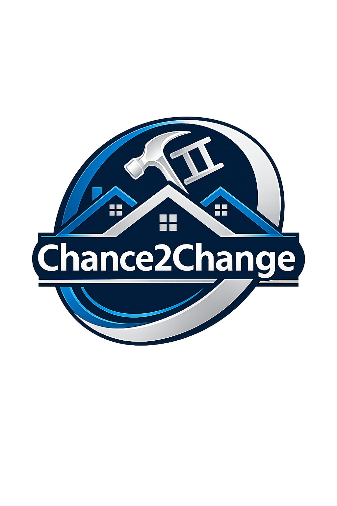
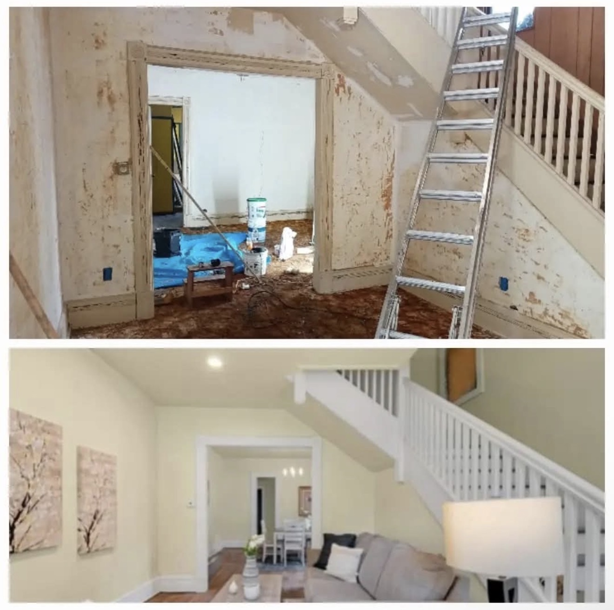
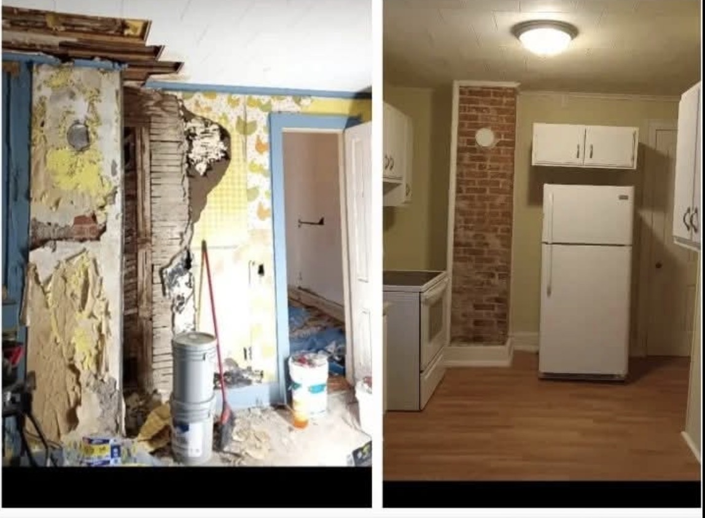
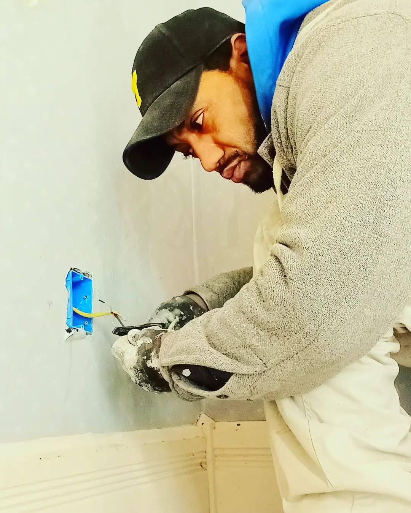

Home Repair & Maintenance
Reliable repairs, maintenance, and project support for homeowners, families, landlords, and community partners.

Chance2ChangeFaith. Skills. Opportunity.
Professional repair services, trade mentorship, and community-focused opportunities designed to help people build practical skills and stronger futures.
We believe lasting change starts with faith, practical skills, and community support. Chance2Change connects home services, hands-on learning, and mentorship to help people build confidence, stability, and stronger futures.
What we do
Reliable repairs, maintenance, and project support for homeowners, families, landlords, and community partners.
Future-focused hands-on learning and practical instruction in carpentry, electrical basics, plumbing, HVAC, safety, and property maintenance fundamentals.
Guidance, encouragement, and skill-building pathways for people seeking a new start and a better future.
Using repair, redevelopment, and training opportunities to strengthen homes, families, and neighborhoods.
Why Choose Chance2Change?
Practical knowledge shaped by years of repair, maintenance, renovation, and property improvement work.
Founder training includes carpentry, electrical, plumbing, HVAC, safety, and trade fundamentals.
Every service supports a larger goal of helping people learn skills, gain confidence, and access opportunity.
Experience shaped by maintenance leadership, property management, renovation planning, and project coordination.
Experience in Action
A look at the real-world trade experience, repair work, and property improvements completed by founder Gregg Swan throughout his career.




Repair. Teach. Empower.
Founder Gregg Swan brings real-world trade experience, property redevelopment knowledge, and trade training credentials to the mission. Chance2Change is designed to help people gain practical skills through hands-on learning and mentorship that can support families, create income, and open doors.
 Click to view full credential
Click to view full credential

Founder Story
Chance2Change was built on a simple belief: the skills that helped one person rebuild can help others do the same.
After years of working in the trades, renovating properties, and learning through hands-on experience, Gregg Swan saw how practical skills can create independence, stability, and opportunity. What began as a passion for construction and real estate grew into a mission to help others gain the tools, confidence, and experience needed to create a better future.
Today, Chance2Change provides professional services while working toward something bigger — empowering people through mentorship, trade education, and community development.
Community Impact
Every service helps support a larger mission: teaching practical trade skills, creating opportunities, and helping people build stronger futures for themselves, their families, and their communities.
Reliable work for homes, properties, and community spaces.
Future training opportunities that help people gain confidence and useful skills through practical experience.
Restoring more than properties by supporting hope, dignity, and opportunity.
Let’s build something better
Reach out for services, future training opportunities, and mentorship. Connect with Chance2Change about partnership opportunities.